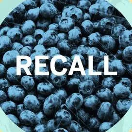

Blueberry Recall 2025: What You Need to Know About the FDA Warning and Listeria Risk
The blueberry recall 2025 has raised serious concerns among health-conscious consumers across the U.S. After traces of Listeria monocytogenes were discovered in a recent batch, the FDA blueberry recall was quickly issued to prevent a wider listeria blueberry outbreak. If you've purchased blueberries recently, especially organic ones, it's crucial to know the risks, symptoms of blueberry contamination, and the specific batches involved in this nationwide alert.
What Is the Blueberry Recall 2025?
The blueberry recall 2025 refers to a significant food safety event triggered by the discovery of Listeria monocytogenes in organic blueberries distributed by Alma Pak. On June 9, 2025, the FDA officially announced the FDA blueberry recall due to contamination risks. This recall has since been classified as a Class I, which indicates the highest level of health risk. Over 12,000 pounds of blueberries were impacted, and although the initial distribution was limited to one customer in North Carolina, the potential health consequences have made national headlines.
Why Is This Recall Considered So Serious?
The danger stems from the presence of Listeria, a type of bacteria known to cause severe foodborne illnesses. A listeria blueberry outbreak can lead to symptoms such as fever, muscle aches, nausea, and in severe cases, infections that spread to the nervous system. This is especially hazardous for pregnant women, elderly individuals, and those with weakened immune systems.
The FDA’s rapid action and classification of the event as Class I highlight the potential gravity of the blueberry contamination. Even if the product only reached a single customer, the mere possibility of it spreading through repackaging, resale, or cross-contamination made this recall a top-priority issue in public health.
How Was the Contamination Discovered?
As part of routine quality checks, Alma Pak performed microbiological testing on its blueberry products. These tests revealed the presence of Listeria monocytogenes. The contaminated batches, identified with lot numbers 13325 G1060 and 13325 G1096, were immediately reported to the FDA.
According to the FDA’s database, these products were packed in 30-pound boxes labeled as organic blueberries. The contamination likely originated during harvesting or packaging, although investigations are ongoing. This discovery underscores the importance of rigorous safety protocols in fresh produce supply chains.
Symptoms of Blueberry Contamination and Listeria Infection
Consumers affected by blueberry contamination may experience symptoms ranging from mild gastrointestinal distress to life-threatening conditions. Common symptoms include:
- Fever
- Muscle aches
- Diarrhea
- Headache
- Confusion or stiff neck (in advanced cases)
Pregnant women are especially vulnerable. Infections during pregnancy can result in miscarriage, stillbirth, or severe illness in newborns. Therefore, if anyone has consumed the recalled product and experiences any of these symptoms, medical attention should be sought immediately.
FDA Response and Recall Classification
The FDA blueberry recall was initially announced as a precaution, but after confirming the presence of Listeria, it was escalated to a Class I recall—the most urgent category. This classification is reserved for products that pose a serious health risk and require immediate consumer awareness.
The FDA collaborated with local health departments and the Centers for Disease Control and Prevention (CDC) to issue guidance to consumers, grocers, and distributors. While the affected shipment was supposedly limited in scope, the possibility of secondary contamination or resale has prompted nationwide alerts.
What Should You Do If You Purchased Recalled Blueberries?
If you recently purchased fresh or organic blueberries, particularly those from Alma Pak or labeled with the affected lot numbers, here are the recommended actions:
- Check the label for lot numbers 13325 G1060 or 13325 G1096.
- If matched, do not consume the product. Discard it safely or return it to the place of purchase.
- Clean and sanitize any surfaces or containers that came into contact with the berries.
- If symptoms develop after consumption, consult a healthcare professional immediately.
Historical Context: Have There Been Similar Recalls?
The 2025 blueberry recall is not the first incident involving fresh produce and Listeria. In previous years, similar contamination led to recalls of strawberries, cantaloupes, spinach, and even packaged salads. In each case, the consequences ranged from isolated illnesses to multi-state outbreaks with fatalities.
What makes this current event unique is the speed and scale of the FDA’s response, as well as the public attention it has received due to the popularity of blueberries as a “superfood.” The incident raises awareness about food safety even in products generally considered healthy.
Preventing Listeria and Staying Safe in the Future
While it’s impossible to eliminate all risk, you can take steps to protect yourself and your family:
- Wash all fruits and vegetables thoroughly before eating, even if labeled as pre-washed or organic.
- Store perishables at appropriate temperatures to slow bacterial growth.
- Clean kitchen tools and surfaces after handling raw produce.
- Stay updated on recalls by subscribing to FDA alerts or using dedicated food safety apps.
Staying informed is one of the most powerful ways to minimize risk. While the blueberry recall 2025 may seem like an isolated case, it’s a stark reminder that food safety is an ongoing concern that affects all of us.
Conclusion
The blueberry recall 2025 serves as a wake-up call for consumers and suppliers alike. From identifying the symptoms of blueberry contamination to understanding the significance of an FDA blueberry recall, this event emphasizes the importance of vigilance in our food systems. By staying informed and practicing safe food handling, we can reduce the risks posed by outbreaks like the current listeria blueberry outbreak and protect our health.
Common Mistakes to Avoid
- Ignoring recall notices or FDA alerts, assuming the risk is minimal.
- Storing blueberries at room temperature for extended periods, increasing the chance of bacterial growth.
- Rinsing contaminated fruit but still consuming it instead of disposing of it entirely.
- Failing to sanitize kitchen surfaces or containers after contact with recalled produce.
- Assuming organic produce is always safe from contamination without proper handling.
Recommended Resources for Food Safety at Home
To help you prevent future food contamination risks like the blueberry recall 2025, here are some highly recommended tools and resources that promote better food hygiene and storage at home.
1. Digital Refrigerator Thermometer
Keep your food stored at safe temperatures to prevent bacterial growth. This compact thermometer gives real-time readings and alerts for temperature fluctuations.
2. Produce Cleaning Brush
Even organic fruits like blueberries can carry harmful bacteria. This soft-bristle brush helps you clean produce effectively without damaging the skin.
3. BPA-Free Airtight Storage Containers
Use food-grade containers to store your berries and other perishables safely. These BPA-free containers help reduce contamination and keep produce fresher for longer.
4. Food Recall Alert App (Free)
Stay informed about future FDA food recalls with mobile apps like “Food Safety News” or “Recalls.gov.” These tools help you act quickly when alerts are issued.
These tools and resources are a smart investment in your health and well-being. Staying informed and properly equipped is your first defense against foodborne illnesses like listeria.
Frequently Asked Questions
Listeria is a type of bacteria that can cause severe illness, particularly in pregnant women, older adults, and individuals with weakened immune systems. Symptoms can include fever, muscle aches, and gastrointestinal distress, and in severe cases, the infection can spread to the nervous system.
Check the label for the lot numbers 13325 G1060 and 13325 G1096. These were part of the FDA blueberry recall 2025. If you find a match, do not consume the product and follow proper disposal or return instructions.
Symptoms can include fever, diarrhea, muscle aches, fatigue, and in some cases, confusion or stiff neck. Pregnant women may experience more serious complications, including pregnancy loss or premature delivery.
If you're not experiencing symptoms, you may be fine, but monitor your health closely for the next several weeks. Listeria can have an incubation period of up to 70 days. If any symptoms develop, seek medical attention immediately.
You can sign up for recall alerts on the official FDA website or use mobile apps like FoodKeeper or Recalls.gov. These tools provide real-time updates and help you take action quickly when new recalls are announced.
Washing can help reduce surface bacteria but may not fully eliminate Listeria, especially if it has penetrated the fruit. In the case of a recall, it’s safest to discard the product completely rather than risk infection.